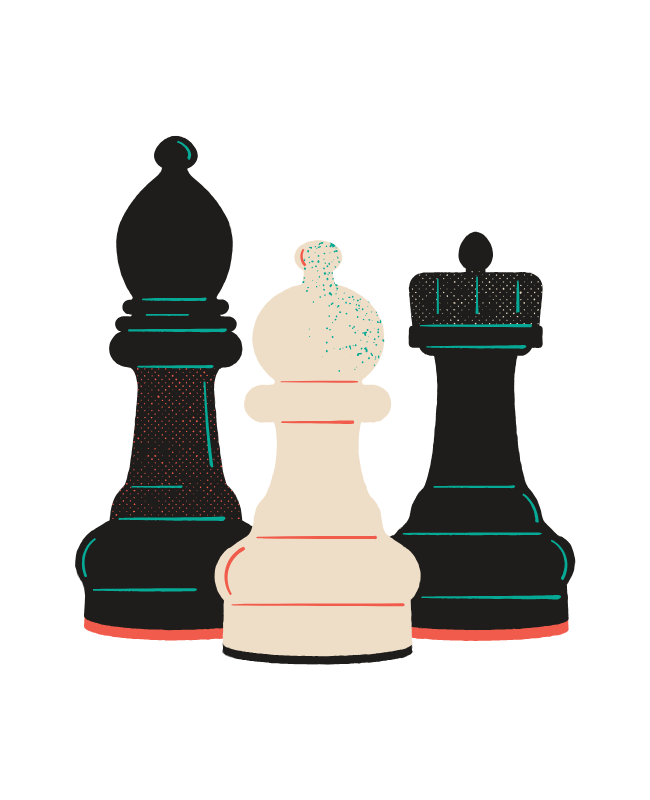
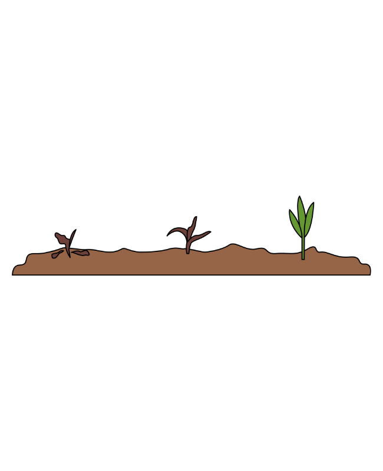

My Portfolio




AI Stock Analyser with Langchain
Developed a stock analysis and portfolio optimisation tool using Python, AI, and financial data to enhance investment decisions with KPI analysis, data visualisation, and Sharpe ratio optimisation. Built using Python, Pandas, Matplotlib, SciPy, PyPortfolioOpt, and Yahoo Finance API.